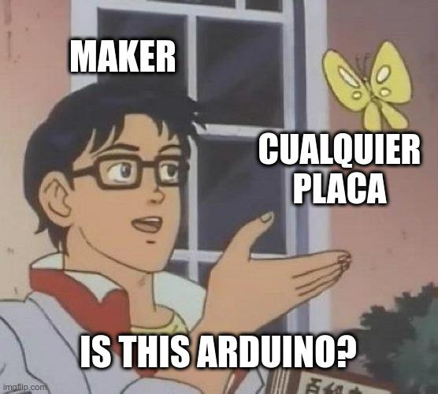
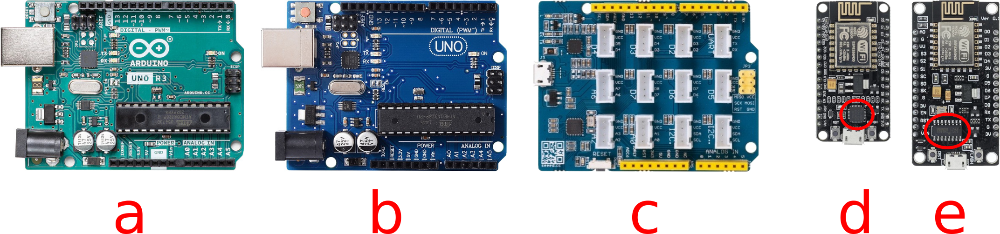
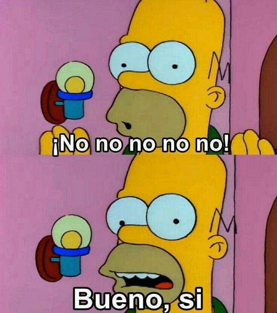

Is this Arduino?
¿Qué dice google?

Si buscás Arduino en Internet, ya sea en un buscador o en M@rcado "Libre" vas a encontrar un montón resultados, pero no siembre son exactos.
Vas a encontrar placas que dicen Arduino, placas que dicen "UNO", otras que no dicen ni lo uno ni lo otro. También vas a encontrar componentes electrónicos, algunos de ellos los vas a poder conectar con un Arduino, pero otro no.
¿Original, clon o compatible?

Las placas originales son las que distribuye Arduino CC o algún distribuidor autorizado como Adafruit. La placa tiene la palabra "Arduino" en su nombre y las clásicas dicen "Designed and assembled in Italy". Son de muy buena calidad, relativamente caras y vienen en una cajita muy bonita. Particularmente los Arduino UNO originales son de color verde azulado.
Los clones tienen la misma forma que los originales, funcionan exactamente igual, casi siempre tienen una calidad muy buena (no es tan complicado fabricar un clon de arduino), si tenés suerte vienen en una bolsita antiestática y son relativamente baratos. Una forma de distinguir un Arduino Uno original de un clon es que normalmente los clones no dicen Arduino, pueden decir "Uno" o algo que termine con "duino" como Seeduino, Cosoino, Truchino, etc. Es muy común que los clones de Arduino UNO sean color azul oscuro (a diferencia del original que es verde azulado). En general son muy recomendables por su precio-calidad.
A las placas compatibles las podemos dividir entre las que son compatibles a nivel hardware porque usan el mismo microcontrolador que las originales (como los clones) y las compatibles a nivel software (que pueden ser programadas con el IDE de Arduino)
Las placas compatibles a nivel hardware son como los clones, pero tienen alguna diferencia en su formato o conectores, algunos ejemplos son las placas para robots didácticos que son completamente compatibles con Arduino y sus sensores pero usan conectores más fáciles de utilizar como fichas telefónicas o conectores tipo molex. Lo único que puede no gustarnos de estas placas es que es posible que no todos sus pines estén disponibles y también es posible que no se les pueda conectar un shield de Arduino.
Finalmente las que llamo "placas compatibles a nivel software", son las que pueden ser programadas con el IDE Arduino, pero cuentan con un microcontrolador diferente a los de los Arduinos originales. En general si tenemos algún sketch para un Arduino oficial, vamos a tener que modificarlo para poder compilarlo para estas placas. También es posible que algunos sensores para Arduino no sean compatibles con estas placas. Esto es porque que los Arduinos originales clásicos que usan microntroladores ATMega como el UNO usan lógica de 5 volts y muchos de los microcontroladores usados en estas placas sólo usan lógica de 3.3 volts, haciendo necesario usar un convertidor de niveles de tensión entre la placa y algunos sensores (level shifter).
Arduino tiene una página con información más detallada sobre como identificar clones y modelos falsificados: https://support.arduino.cc/hc/en-us/articles/360020652100-How-to-spot-a-counterfeit-Arduino

En la imagen anterior se puede ver:
- a) Un Arduino Uno original.
- b) Un clon de Arduino Uno.
- c) Una placa compatible a nivel hardware la Seeduino Groove.
- d) Una placa compatible a nivel software la NodeMCU con adaptador USB CP2102 (el chip resaltado).
- e) Una placa compatible a nivel software la NodeMCU con adaptador USB CH340 (el chip resaltado), estas son más anchas e incómodas de usar en protoboard que las anteriores.
¿Importa que sea un clon o una placa compatible?

Dado que los clones son mucho más baratos que las placas originales es muy conveniente comprar clones. Recordemos que vamos a experimentar y si se nos rompe la placa tenemos que poder comprar otra para no frustrarnos y seguir experimentando. Además de nada sirve una placa original si nos da miedo usarla porque es cara.
En cuanto a las placas compatibles muchas veces ofrecen características que no están presentes en las placas originales como Bluetooth, WiFi, cámaras integradas o soporte itegrado para baterías de litio, por lo que pueden ser muy convenientes si buscamos algo de esto.
¿Qué me conviene?
Dependiendo de lo que necesitas hay muchas opciones, dejo como ejemplo algunas de las más comunes.
En qué lenguaje/entorno de programación querés programar la placa:
- Arduino IDE: Originales, clones y compatibles te pueden servir.
- Micropython/circuit Python: Raspberry Pi Pico, ESP32-S, algunas placas de Adafruit, etc...
Costo:
- Los clones y las compatibles son lo más accesible.
- Si tenés la posibilidad doná a Arduino CC o comprales una placa original para agradecer su aporte a la comunidad. Pero si no podés los clones funcionan muy bien.
Conectividad inalámbrica:
- WiFi:
- ESP8266 (Módulos como el NodeMCU con CP2102 y Weemos D1 Mini) o ESP32 son las alternativas más comunes.
- Raspberry Pi Pico
- Alguna Raspberry Pi con WiFi integrado (acá ya estamos en la categoría de computadoras más que microcontroladores pero pueden ser una alternativa, hay que tener en cuenta que en general en la Raspberry Pi el desarrollo es en Python)
- Bluetooth/BLE:
- ESP32-S (Preferentemente algún módulo con el chip CP2102)
- Alguna Raspberry Pi con Bluetooth integrado
Cámaras:
- Alguna Raspberry Pi con un módulo webcam o con una webcam USB.
- ESP32-CAM
Facilidad para conectar sensores/actuadores y para programar:
- Quizás lo más fácil sea ir con un clon de Arduino UNO, ya que encontraremos infinidad de accesorios para esta placa y de tutoriales y ejemplos en Internet.
Too long, didn't read
Probablemente no lo sea, pero no importa.
Comentarios